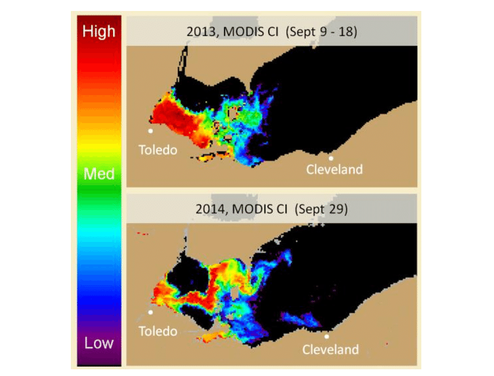

Explore
Table of Contents
Explore Places where Remote Sensing had been used with Artifical Intelligence!
What does Remote Sensing Actually Look Like?

This is an example of what an image generated from remote sensing algorithms looks like. It is highlighting the areas in which large harmful algal blooms are present in Lake Erie. In this specific example we can see the migration of these algal blooms over time.

Building Detection
Building Extraction